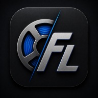

Alles im Blick
Verwalte deine Filamente zentral.

Smart Filament Management
FilaLog ist eine Software zur Verwaltung von Filamenten für den 3D-Druck.
Mit FilaLog können Nutzer ihren Filamentbestand verwalten, Restgewichte verfolgen, Druckkosten berechnen, ihre Druckhistorie dokumentieren und Verbrauchsstatistiken auswerten.
Für die Web-Version von FilaLog wird ein Premium-Jahresabonnement für 19,99 € pro Jahr angeboten.
Verwalte deine Filamente zentral.
Werte deinen Verbrauch übersichtlich aus.
Synchronisiere deine Daten sicher in der Cloud.
Einfaches Jahresabonnement.